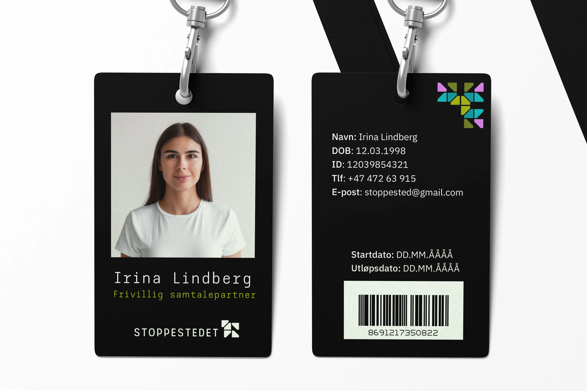
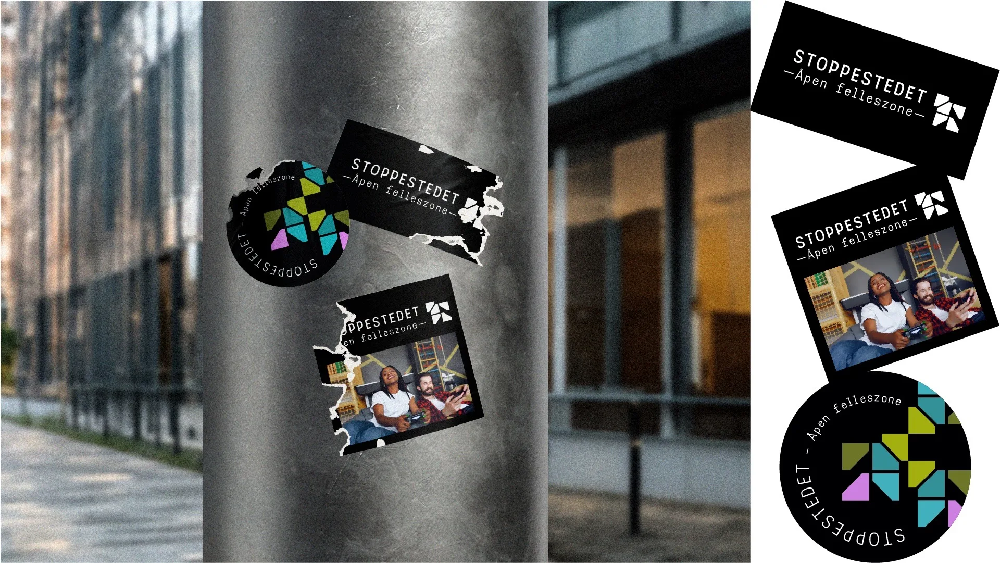
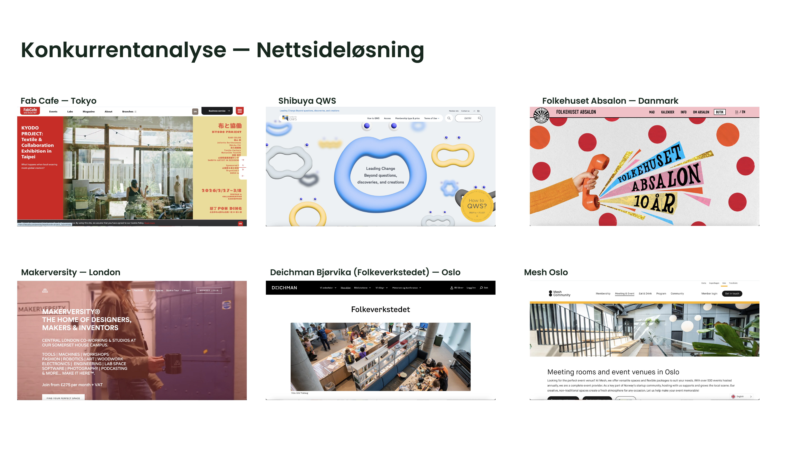

Stoppe-
stedet
PROSESS
Prosessfaser
Fra V1 til V2
I første versjon jobbet jeg med et mørkere og mer nisjepreget uttrykk. Designet hadde et tydelig visuelt system, men etter hvert så jeg at det ikke kommuniserte lavterskel og tilgjengelighet godt nok. Det kunne oppleves mer som et eksklusivt kreativt miljø enn et åpent sted for folk som bare vil prøve noe nytt.
Derfor valgte jeg å endre retning. Jeg gikk fra et mørkt og smalere uttrykk til en lysere, tydeligere og mer inviterende identitet. Målet var at Stoppestedet skulle føles enkelt å forstå, lett å bruke og trygt å oppsøke, også for personer uten forkunnskaper.
Hvem er dette for?
Jeg tok et steg tilbake og stilte spørsmålet jeg burde ha stilt tidligere. Et mørkt og monospaced uttrykk signaliserer noe smalt og eksklusivt. Det kan passe for et plateselskap eller en tech-startup, men ikke for et sted som skal være åpent og tilgjengelig for unge mennesker som kanskje aldri har prøvd å skape noe før.
Blindveien hadde verdi
Jeg valgte å starte på nytt. Ikke fordi arbeidet var bortkastet, men fordi prosessen viste hva stedet ikke skulle føles som. Den innsikten var avgjørende.
Målgruppen endret alt
Jeg utvidet målgruppen til folk fra 16 år og oppover. Det endret hele tilnærmingen. Oransje erstattet olivengrønt som en mer aktiv og inkluderende farge, og Syne erstattet Space Mono med et varmere og mer åpent uttrykk. Resultatet skulle føles enkelt og inviterende: kom hit.
Da målgruppen ble utvidet fra unge voksne med kreativ erfaring til personer fra 16 år og oppover, måtte uttrykket også bli bredere. Jeg måtte derfor tenke mer på tydelig informasjon, lesbarhet og en visuell tone som ikke virket for intern eller eksklusiv.


| Versjon 1 | Versjon 2 | |
|---|---|---|
| Målgruppe | 18–28, kreativ praksis | 16+, alle aldre |
| Bakgrunn | Nær-svart | Hvit |
| Primærfarge | Olivengrønn | Orange |
| Overskrift | Space Mono | Syne |
Logoutvikling
Logoen er inspirert av makerspace-idéen, der enkle former fungerer som byggeklosser som kan settes sammen til noe større. De ulike elementene symboliserer materialer, verktøy og idéer som kombineres i kreative prosesser. Fargene gir et lekent og inkluderende uttrykk, mens det stramme rutenettet skaper struktur og balanse.

Digital konkurrentanalyse

FabCafe — Tokyo
Nettsiden til FabCafe er visuelt tung og inspirasjonsdrevet, med fokus på prosjekter, events og kreativ utforskning. Den fungerer mer som en plattform for idéutveksling enn en tradisjonell informasjonsnettside.
— Oppleves kreativ og inspirerende, men lite strukturert og ikke umiddelbart lavterskel.
Shibuya QWS
Nettsiden er moderne og konseptuell, med fokus på samarbeid, innovasjon og community. Den bruker grafikk og visuelle elementer for å formidle stemning, men gir mindre konkret informasjon om hvordan stedet tas i bruk.
— Oppleves inspirerende, men abstrakt og mindre tilgjengelig for nye brukere.
Folkehuset Absalon — Danmark
Nettsiden er enkel, varm og direkte. Den kommuniserer tydelig hva man kan gjøre der, med fokus på aktiviteter, mat og fellesskap.
— Veldig tilgjengelig og nærmest Stoppestedet i kommunikasjon.
Makerversity — London
Nettsiden er profesjonell og tydelig strukturert, med fokus på medlemskap, fasiliteter og samarbeid. Den retter seg mot en etablert og kreativt aktiv målgruppe.
— Oppleves eksklusiv og mer «proff» enn lavterskel.
Deichman Bjørvika (Folkeverkstedet)
Nettsiden er informativ og funksjonell, med tydelig navigasjon og praktisk informasjon. Den forklarer tilbudet godt, men har mindre fokus på stemning og visuell identitet.
— Veldig tilgjengelig, men mindre inspirerende visuelt.
Mesh — Oslo
Nettsiden er stilren og kommersiell, med fokus på nettverk, arrangementer og arbeidsplasser. Den retter seg mot gründere og profesjonelle brukere.
— Oppleves som et mer lukket og målrettet miljø.
Stoppestedets posisjon
Stoppestedet plasserer seg i skjæringspunktet mellom kreativ inspirasjon og tydelig tilgjengelighet. Konseptet tar en klar posisjon som et åpent og lavterskel alternativ — et sted man kan komme til uten forkunnskaper, og likevel føle at man hører til.
Konkurrentanalysen gjorde det tydelig at mange lignende steder enten var veldig inspirerende, men litt uoversiktlige, eller veldig informative, men mindre visuelt engasjerende. Jeg ønsket derfor at Stoppestedet skulle ligge mellom disse retningene: kreativt nok til å inspirere, men enkelt nok til at man raskt forstår hva stedet tilbyr.